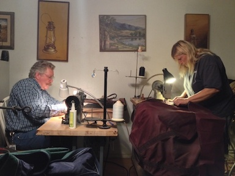

 Judy and John met in the early 80’s while working for Wilson’s Custom Saddlery in San Luis Obispo, Ca. Judy worked for several years on blanket repair and making saddle bags, gear bags, and rope bags all while going to school for her Animal Science degree. She found she loved the challenge of taking a blanket that someone thought was irreparable and making it look almost new. That is why, now, she concentrates on repairs of your horse related items. Rest assured that her focus will be on you and your horse’s needs and nothing else!
While Judy was up front cleaning and sewing away, John had the awesome opportunity of apprenticing at the work bench of saddle maker Bob Wilson. John was responsible for making custom bits and spurs as well as working on saddle and tack repair and making bridles and reins. He too, like Judy, now enjoys bringing new life to an old trusted saddle or fixing the bridle with a lot more life.
Experience? Yes we have it! Quick and reliable service? You know it! Quality and dependability? You better believe it! But, do we know horses and what their needs are? You betcha! Riding in many disciplines from Trail riding, working cattle, gymkhana, barrel racing and dressage, their love and appreciation for horses spans both their life times for a combined 80 years!
Judy’s Horse Blanket and Tack repair is based on the belief that our customers’ needs are of the utmost importance. John and Judy are completely committed to meeting those needs. As a result, a high percentage of our business is from repeat customers and referrals. We would welcome the opportunity to earn your trust and deliver you the best service in the industry.
John and Judy have always been community minded and firmly believe in supporting the community with their time and talents. They donated their time for several years running the local NBHA Races as well as their money sponsoring classes in both NBHA and local horse shows. We truly believe that by supporting and sponsoring these local events we are directly investing in the youth of today to help produce responsible, caring adults for tomorrow.